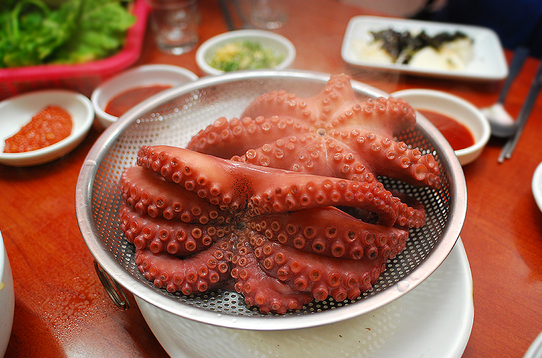
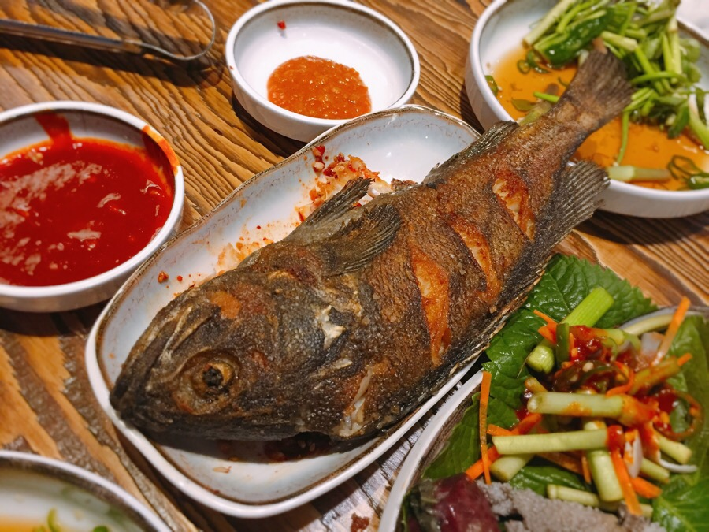
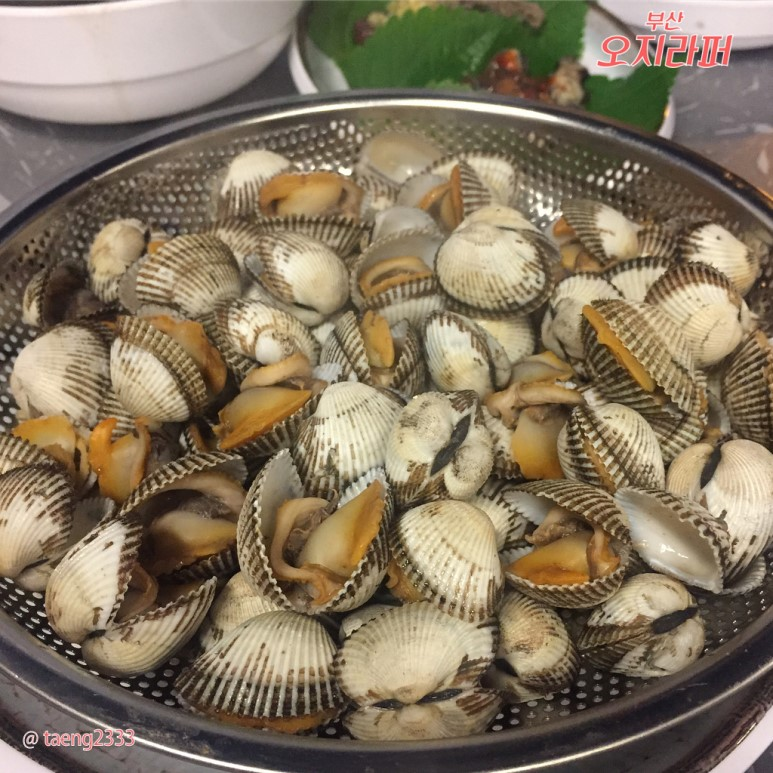
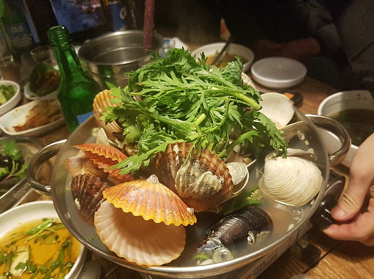

○화려한 메인메뉴들 입니데이~~

인기도 : ★★★★★
<문어효능>
- 두뇌발달 - 두뇌에 탁월한 도움을 주는 식품으로 EPA와DHA가
다량으로 함유되어 있어서 기억능력의 향상을 돕는다. - 피부관리 - 피부결의 형성을 돕는 나이아신과 비타민E가 적정량 있는
문어는 붓기를 빼주는 효과가 있으며 칼륨 안에 속해있는 건강한 피부를
유지할 수 있도록 도움을 준다. - 노화예방 - 문어는 노화를 제한시키는 기능이 있는데 나이아신과
비타민E가 포함되어 있어 신체와 얼굴 젊음을 유지하는데 탁월한 효과가 있다.

인기도 : ★★★☆☆
<우럭효능>
- 간기능개선 - 우럭에는 비타민A, 타우린, 함황아미노산이 풍부하여
피로회복 뿐만 아니라 간기능 회복에 탁월하다. - 심혈관계질환예방 - 아미노산이 풍부하여 고혈압,동맥경화,당뇨를 비롯한
각종 성인병 예방에 도움이 된다. - 눈건강개선 - 필수지방산 뿐만 아니라 눈건강과 관련있는 비타민A를
풍부하게 함유하고 있어 시력개선 및 눈 관련 질환에 도움이 된다.

인기도 : ★★★★☆
<꼬막효능>
- 철분 풍부 - 철분은 인체의 각 조직에 산소를
공급해주는 헤모글로빈의 구성분이다. - 간 건강 개선 - 꼬막에 함유되어 있는 타우린과
베타인 성분이 콜레스테롤의 축적을 억제하고 간 기능을
좋게 하는 작용을 한다. - 노화방지 - 항산화와 노화억제 작용을 하는 미네랄인
셀레늄이 풍부하다.

인기도 : ★★☆☆☆
<조개효능>
- 체중감소 - 조개류는 칼로리가 적고 단백질과
건강에 유익한 지방을 많이 함유하고 있다.
이를 꾸준히 섭취하게 되면 체중 감량에 도움이 된다고 한다. - 숙취해소 - 조개는 숙취 해소에 아주 좋다고 하는데,
술을 마시고 난 후에 조개탕을 끓여서 먹으면 조개에 함유된
타우린이 간을 해독하는 데에 도움을 주기 때문에 숙취 해소에 좋다고 한다.
술을 마실 때 조개탕을 함께 먹어도 좋다고 한다.

인기도 : ★★★★☆
<가오리효능>
- 성인병예방 - 가오리의 살과 간에 불포화 지방산이 풍부해
어린이 성장 발육 및 성인병예방에 좋다. - 피부미용 - 가오리는 연골 어류로 껍질에는 콜라겐이 풍부하다.
콜라겐은 피부를 부드럽게 해 주름살을 없애주는 작용을 한다. - 숙취해소 - 가오리는 숙취에 좋아 술안주로 좋고 감기 치료에도
효과적이다. 비타민이 풍부해 칼슘 함량도 높다.